📊 Comparativo dos 4 domínios SEMrush
Market share, visitas e tendência lado a lado.
{kind=link}
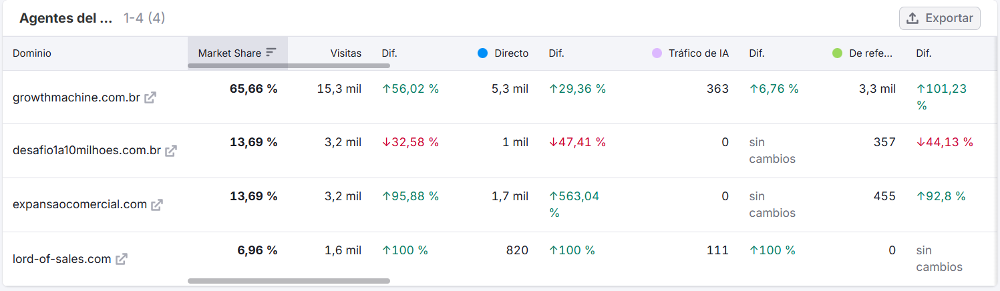
Visão geral — 4 domínios
growthmachine 65,66%expansao 13,69% ▲+96%desafio 13,69% ▼−33%lord-of-sales 6,96% ✦novo O domínio-mãe lidera; expansaocomercial e lord-of-sales em rampa de lançamento; desafio1a10milhoes em queda.
🏢 growthmachine.com.br ▲ +56%
~51,1 mil visitas (Fev–Abr, ~17k/mês). Site de autoridade orgânica que começou a fazer mídia paga.
{kind=link}
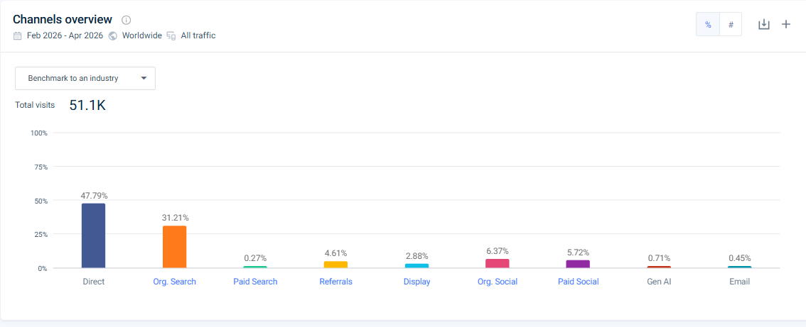
Canais (overview) — 51,1k visitas
Direto 47,79%Busca org. 31,21%Social pago 5,72%Display 2,88% Direto + SEO ≈ 79%. ~9% pago (social pago + display + busca paga) — ≠ recon inicial que era 0% pago.
{kind=link}
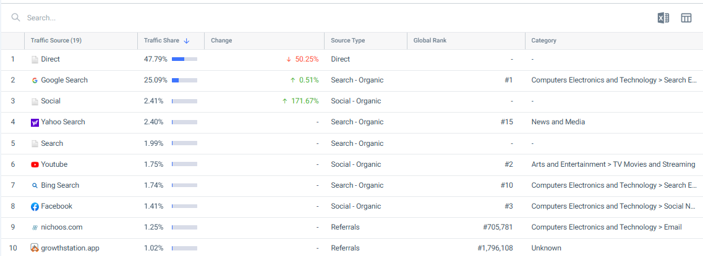
Top fontes
Direto 47,79% ▼−50%Google #1 25%Social ▲+171%YouTube 1,75%Facebook 1,41% Direto perde peso; social cresce forte. Referrals próprios: nichoos.com e growthstation.app.
{kind=link}
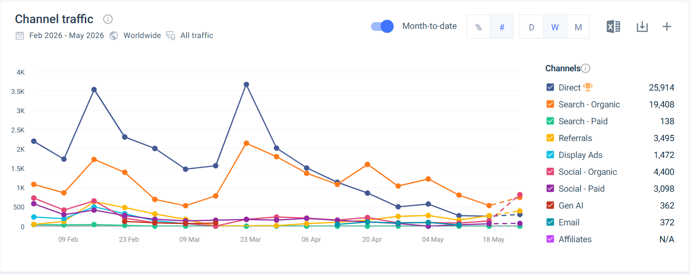
Totais de canal (Fev–Mai)
Direto 25,9kOrg. 19,4kSocial org. 4,4kSocial pago 3,1kDisplay 1,5kGen AI 362 Volume real por canal.
{kind=link}
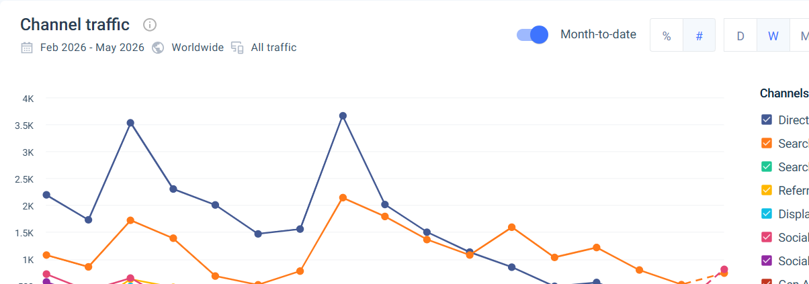
Tráfego por semana
Direto e busca oscilam com picos (~3,5k) em semanas de campanha/lançamento (23/fev e 23/mar).
{kind=link}
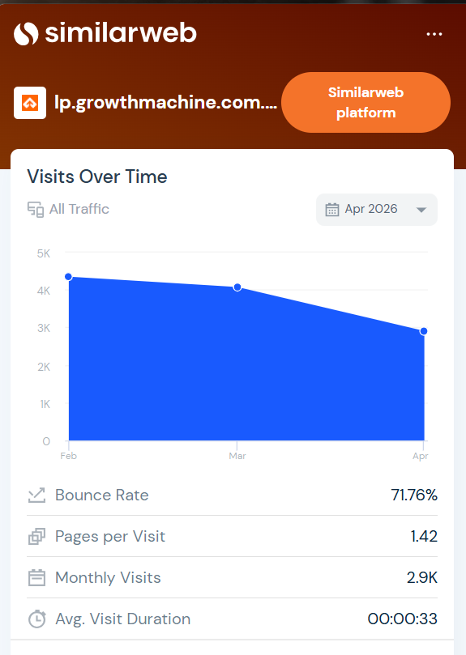
lp.growthmachine.com.br — caindo
2,9k/mês ▼bounce 71,76%1,42 pág0:33 Subdomínio de iscas/LPs perdendo tráfego (4,3k→2,9k) — esforço migrou pros domínios dedicados.
🚀 expansaocomercial.com ▲ +96% (high-ticket)
Funil novo em rampa agressiva: 0 → 3,7 mil visitas em abril. A aposta high-ticket atual (PEC).
{kind=link}
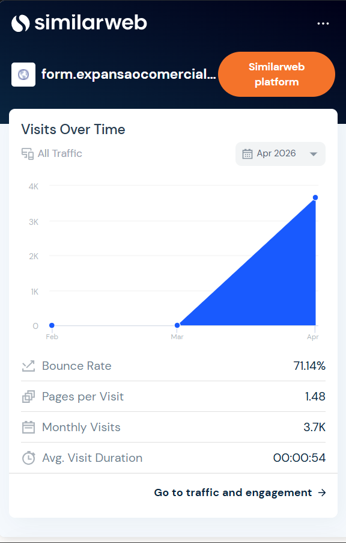
Visits over time (SimilarWeb)
0→3,7k em abrbounce 71,14%1,48 pág0:54 Rampa de lançamento — direto +563% no SEMrush.
{kind=link}
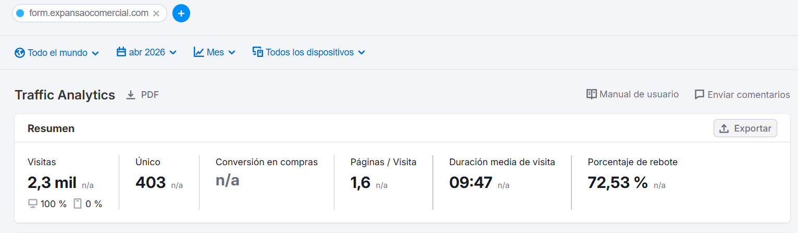
Resumo (SEMrush)
2,3 mil visitas403 únicosduração 9:47100% desktop Subdomínio = form de diagnóstico/aplicação. Quem entra fica (9:47).
{kind=link}
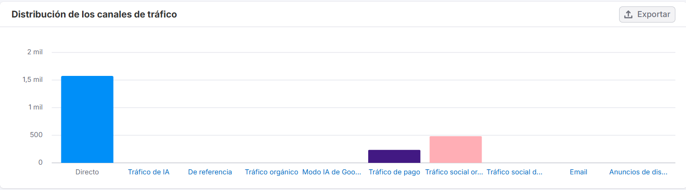
Canais
Direto ~1,5kPago ~250Social org. ~480 Direto altíssimo = tráfego branded (YT/email/ads apontando pro nome).
👑 lord-of-sales.com ✦ novo
Gamificação (ranking/missões). 0 → ~1–1,6 mil em abril, com direto disparando em maio. Lead gen via LinkedIn/YouTube/IA.
{kind=link}
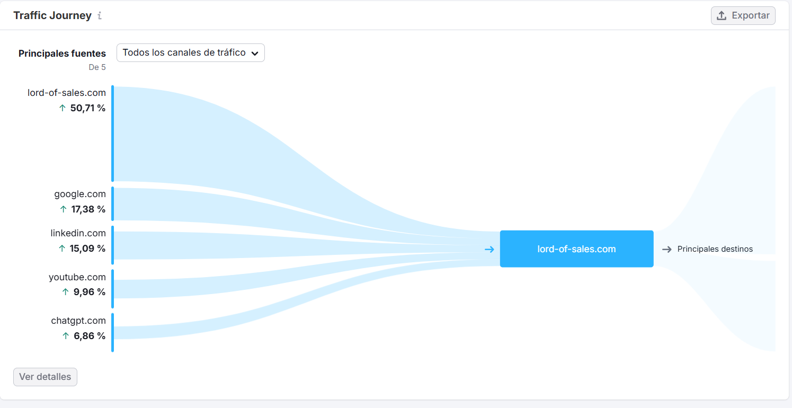
Traffic Journey — de onde vem
próprio 50,7%Google 17,4%LinkedIn 15,1%YouTube 10%ChatGPT 6,9% LinkedIn + YouTube são as fontes externas; ChatGPT já aparece (tráfego de IA).
{kind=link}
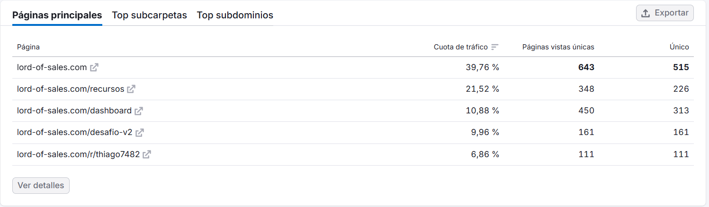
Top páginas
home 39,8%/recursos 21,5%/dashboard 10,9%/desafio-v2 10%/r/thiago7482 6,9% O /r/thiago7482 é o link de indicação do Thiago — ele opera como embaixador rastreado.
{kind=link}
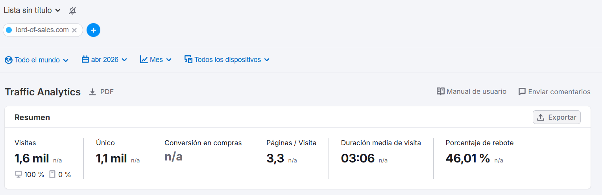
Resumo (SEMrush)
1,6 mil3,3 pág/visita3:06bounce 46% Alta retenção pelo formato gamificado (≠ SimilarWeb que estima bounce 93%).
{kind=link}
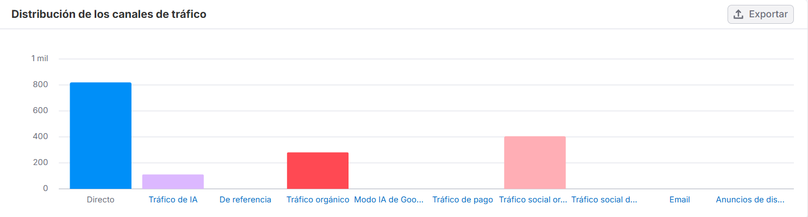
Canais
Direto ~810Social org. ~400Orgânico ~280IA ~110 Sem mídia paga — cresce por orgânico social + IA.
{kind=link}
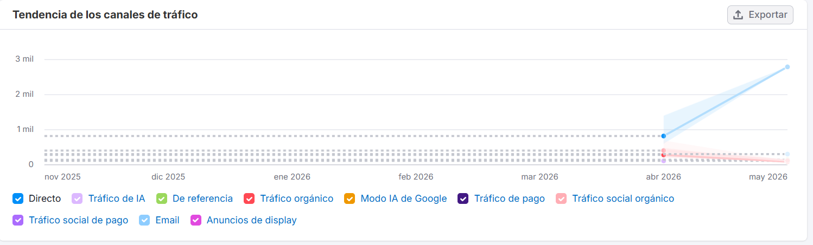
Tendência
Direto disparando pra ~2,8 mil em maio — provável janela de desafio/competição.
{kind=link}
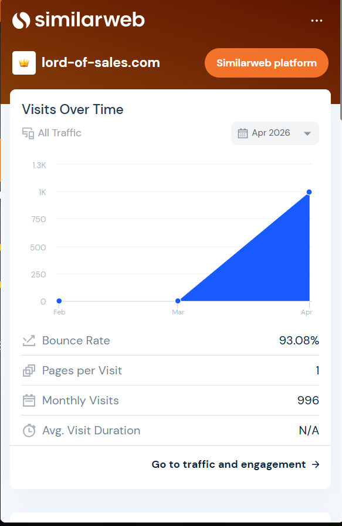
Visits over time (SimilarWeb)
0→996 em abrbounce 93%1 pág Leitura conservadora do SimilarWeb (vs SEMrush mais otimista).